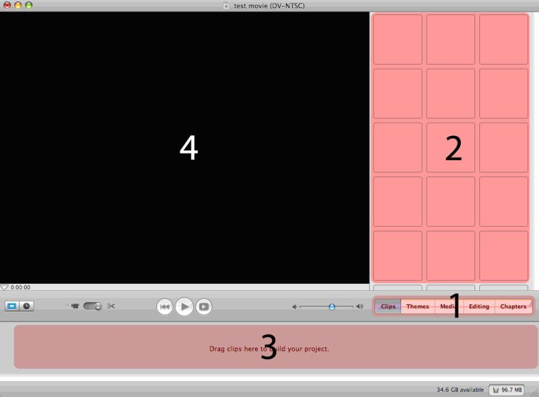

Using
The iMovie Interface This is what iMovie should look on your computer (may vary depending on the version). Section 1 on the picture above is the control menu for your project – we use it to switch between different editing functions. Today, we will be working in the clips and editing tabs. The grid of boxes in section 2 is your media library. Once we import clips, iconic representations of these clips will show up in our library, so that we can order them in our timeline (section 3). In the timeline, we will choose the order that everything goes in – audio, video, titles, and transitions – it is a linear representation of your entire project. Finally, whatever clip we are working with will appear in section 4, our preview window. You can also use the controls below our preview window to watch your entire iMovie. Now, lets go import your media clips into our iMovie project. |
<- Page 2: Elements of an iMovie | Page 4: Importing Media -> |